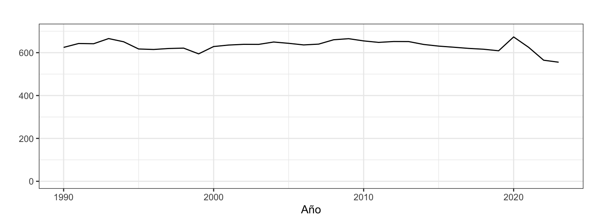
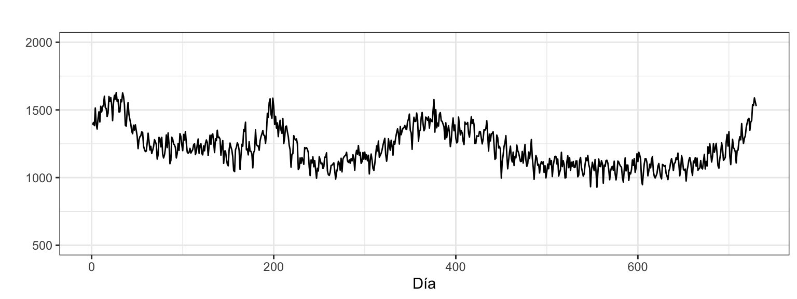

Previsión con Datos Temporales (GBIA)
La series más sencillas que podemos encontrarnos son aquellas que no tienen tendencia ni estacionalidad, series que se mueven en torno a un valor central desconocido: \(y_t = \mu + \varepsilon_t\).
La Figura 1 muestra dos ejemplos de este tipo de series. El panel de la izquierda muestra para España el consumo per cápita de alimentos en el hogar (kg per cápita) desde 1990 hasta 2023. Se observa claramente que en los últimos 30 años el volumen de consumo de alimentos per cápita en el hogar prácticamente no ha variado y se mantiene en torno a los 632 kg de media. El panel de la derecha muestra el número de defunciones diarias desde el 1 de enero de 2022 al 31 de diciembre de 2023. Esta serie también es estacionaria en torno al valor medio de 1220 defunciones y, aunque es una serie diaria, no muestra ningún patrón estacional. La Parca no muestra ninguna preferencia entre los días de la semana para citarnos.
En este tema veremos tres familias de métodos para analizar y predecir este tipo de series. Empezaremos por los métodos sencillos (incluido el de medias móviles) que no requerirán apenas de explicaciones. Luego veremos el método de Alisado exponencial simple, algo más complejo y donde ya habrá que ajustar algunos parámetros, ya veremos cómo. Terminaremos con el modelo Arima para el caso más simple, que nos llevará aun algo más de tiempo.
En los siguientes temas veremos como adaptar estos mismos métodos de predicción a una serie temporal creciente en complejidad al añadir primero la tendencia (Tema 6) y luego la estacionalidad (Temas 7 y 8).
Dado que en este tema, y en los siguientes, vamos a ver diferentes métodos para predecir una serie temporal, es preciso definir criterios que permitan estimar tanto su calidad del ajuste (bondad de ajuste) como su precisión con las predicciones, para poder elegir el mejor modelo.
“The rankings of the performance of the various methods vary according to the accuracy measure being used.” Makridakis and Hibon (2000)
Dada una serie temporal \(\{y_t\}_{t=1}^T\), se define:
Previsión \(h\) periodos adelante, como la previsión de la serie para el periodo \(t+h\) disponiendo de información hasta el periodo \(t\), y se denota por \(\hat{y}_{t+h|t}\). Por simplicidad lo escribiremos también como \(\hat{y}_{t+h}\).
Así, \(\hat{y}_{t+1|t}\) es la previsión un periodo adelante o a un periodo vista. Es decir, la previsión de la serie en el periodo \(t+1\) desde el periodo \(t\).
Por simplicidad denotaremos a \(\hat{y}_{t+1|t}\) como \(\hat{y}_{t+1}\). Por tanto, \(\hat{y}_{t}\) será la previsión en \(t\) con datos hasta el periodo \(t-1\) (\(\hat{y}_{t} = \hat{y}_{t|t-1}\)).
Si para un periodo \(t\) se tiene la observación \(y_t\) y una previsión \(\hat{y}_t\), se define como error a un periodo vista a \[\hat{e}_t=y_t-\hat{y}_t,\] de forma que la serie \(\{\hat{e}_t\}_{t=1}^T\) nos permitirá definir varios criterios de calidad.
Los mismos criterios que se van a definir a continuación pueden ser criterios de calidad de ajuste o de calidad de las previsiones. Esta diferencia depende de cómo se ha obtenido \(\hat{y}_t\).
Si en el proceso de predicción hay parámetros cuyo ajuste o estimación se ha realizado usando toda la serie temporal, entonces hablaremos de calidad de ajuste: para obtener \(\hat{y}_t\) se habrá usado el dato \(y_t\) y los siguientes, es decir, datos posteriores al periodo \(t\) y entonces \(\hat{e}_t\) es un error de ajuste.
Por el contrario, si en el proceso de predicción no hay parámetros o habiéndolos su estimación se ha realizado usando la serie temporal hasta el periodo \(t-1\), entonces hablaremos de calidad de predicción: para obtener \(\hat{y}_t\) solo se habrán usado el datos hasta \(y_{t-1}\), es decir, datos anteriores al periodo \(t\), y entonces \(\hat{e}_t\) es un error de predicción.
A veces al error de ajuste se le denomina error de previsión intramuestral y hablaremos de criterios de calidad intramuestral. De la misma forma al error de previsión se le denomina error de previsión extramuestral y hablaremos de criterios de calidad extramuestral o precisión de las predicciones.
Dada una serie \(\{y_t\}_{t=1}^T\), un método de predicción y su vector de errores asociado \(\{\hat{e}_t\}_{t=1}^T\), podemos definir múltiples criterios de calidad de ajuste o predicción del método que hacen referencia a la presencia de sesgo en las predicciones, la magnitud del error cometido y la calidad del intervalo de confianza de las predicciones. Las más habituales son (siglas en inglés):
ME y MPE permiten valorar el sesgo de las predicciones (que estén sistemáticamente por encima o por debajo de los valores reales).
RMSE y MAE son medidas de calidad de ajuste/precisión. Indican el error medio cometido, independientemente del signo, medido en las mismas unidades que la serie temporal.
MAPE es una medida de calidad de ajuste/precisión alternativa que indica el error porcentual medio cometido.
MASE es la ratio entre el error del método usado y el error de un método ingenuo de predicción. Permite saber cuánto ganamos en capacidad predictiva al pasar de un método ingenuo a otro más complicado.
ACF1 permite saber si el método empleado ha extraído toda la información disponible en los datos de la serie para hacer las predicciones. Si no es así, la fórmula usada para estimar el intervalo de confianza de las predicciones no será válida:
Ve a la Píldora Bootstrapping para intervalos de predicción para saber más sobre las fórmulas usadas para estimar el intervalo de confianza de las predicciones y alternativas de cálculo cuando estas fórmulas no son válidas.
En todas las fórmulas de criterios de calidad las medias se pueden sustituir por medianas. Esto es especialmente útil cuando para hay observaciones atípicas que generan errores muy altos.
Los indicadores de calidad de ajuste que se basan en predicciones intramuestrales a un periodo vista, presentan dos problemas. Primero, evalúan el error a un periodo vista, cuando en muchas situaciones reales las predicciones se realizan sobre un horizonte temporal más amplio. Segundo, son errores intramuestrales, resultantes de predecir los mismos datos que ha usado el método para calcular la predicción y, por tanto, sobrestiman la capacidad predictiva del modelo.
Veremos en el Tema 5 métodos de evaluación de la precisión de las predicciones que superan estas limitaciones.
Veamos algunos métodos sencillos para series sin tendencia ni estacionalidad, sus funciones en el paquete forecast y algún ejemplo de aplicación.
Incluiremos dentro del grupo de métodos sencillos la media móvil. Aunque en este método el analista debe fijar un parámetro, así que no es tan sencillo.
Método de la Media: \(\hat{y}_{T+h}=(y_1+\ldots,y_T)/T\).
R: meanf(y, h)Método ingenuo I: \(\hat{y}_{T+h}=y_T\).
R: naive(y, h) o rwf(y, h) (rw de random walk)Método de la media móvil: \(\hat{y}_{T+h}=\frac{1}{r}(y_T + y_{T-1} + \cdots + y_{T-r+1})\).
Este método no tiene una función de R, así que usaremos una creada por nosotros: mmf(x, r, h, level).1
mmf <- function (x, r = 3, h = 10, level = c(80, 95))
{
n <- length(x)
startx <- start(x)
frequencyx <-frequency(x)
mm <- stats::filter(x, rep(1/r, r), side = 1)
fits <- c(NA, mm[-n])
res <- x - fits
f <- rep(mm[n], h)
if (min(level) > 0 && max(level) < 1) {
level <- 100 * level
} else if (min(level) < 0 || max(level) > 99.99)
stop("Confidence limit out of range")
nconf <- length(level)
s <- sd(res, na.rm = TRUE)
lower <- upper <- matrix(NA, nrow = h, ncol = nconf)
for (i in 1:nconf) {
if (n > 1) {
tfrac <- qt(0.5 - level[i]/200, n - 1)
} else {
tfrac <- -Inf
}
w <- -tfrac * s * sqrt(1 + 1/n)
lower[, i] <- f - w
upper[, i] <- f + w
}
colnames(lower) <- colnames(upper) <- paste(level, "%", sep = "")
fits <- ts(fits, start = startx, frequency = frequencyx)
res <- ts(res, start = startx, frequency = frequencyx)
f <- ts(f, start = time(x)[n] + 1/frequencyx, frequency = frequencyx)
lower <- ts(lower, start = time(x)[n] + 1/frequencyx, frequency = frequencyx)
upper <- ts(upper, start = time(x)[n] + 1/frequencyx, frequency = frequencyx)
out <- list(method = "Moving average", level = level, x = x,
mean = f, lower = lower, upper = upper, fitted = fits,
residuals = res, order = r)
return(structure(out, class = "forecast"))
}La función mmf precisa de tres argumentos, una serie temporal, el orden de la media móvil \(r\) y el horizonte de previsión \(h\). Los valores por defecto de los dos últimos argumentos están fijados a 3, 10.
Analizaremos el consumo alimentario en hogar per cápita en España. Esta serie está construida a partir de la serie de consumo alimentario en hogar (disponible en el Ministerio de Agricultura, Alimentación y Medio Ambiente) y la serie de población (disponible en el Instituto Nacional de Estadística). Es una serie anual de 1990 a 2023 (34 datos) y la unidad es el kg per cápita. El panel a) de la Figura 1 muestra que es una serie estacionaria.
alimentospc <- read.csv2("./series/Alimentacionpc.csv",
header = TRUE)
alimentospc <- ts(alimentospc[, 1],
start = 1990,
freq = 1)Las siguientes salidas muestran el resultado de la aplicación de los métodos sencillos a la serie. Se ha fijado un horizonte de previsión de cinco años (h = 5). Todos estos métodos realizan una predicción constante, el método de la media da la media del consumo de alimentos per cápita en el periodo de análisis (632.14); el Ingenuo I da el último dato observado (555.47); y la media móvil de orden \(r=4\), valor fijado por nosotros, da la media de las cuatro últimas observaciones 604.63.
(mediaAlimentospc <- meanf(alimentospc, h = 5)) Point Forecast Lo 80 Hi 80 Lo 95 Hi 95
2024 632.1406 598.4999 665.7812 579.804 684.4771
2025 632.1406 598.4999 665.7812 579.804 684.4771
2026 632.1406 598.4999 665.7812 579.804 684.4771
2027 632.1406 598.4999 665.7812 579.804 684.4771
2028 632.1406 598.4999 665.7812 579.804 684.4771(naiveAlimentospc <- naive(alimentospc, h = 5)) Point Forecast Lo 80 Hi 80 Lo 95 Hi 95
2024 555.472 527.5726 583.3714 512.8036 598.1404
2025 555.472 516.0163 594.9277 495.1297 615.8143
2026 555.472 507.1488 603.7952 481.5681 629.3759
2027 555.472 499.6732 611.2708 470.1351 640.8089
2028 555.472 493.0871 617.8569 460.0625 650.8815(mmAlimentospc <- mmf(alimentospc, r = 4, h = 5)) #Fijamos r = 4 años. Point Forecast Lo 80 Hi 80 Lo 95 Hi 95
2024 604.6273 572.4228 636.8317 554.5251 654.7294
2025 604.6273 572.4228 636.8317 554.5251 654.7294
2026 604.6273 572.4228 636.8317 554.5251 654.7294
2027 604.6273 572.4228 636.8317 554.5251 654.7294
2028 604.6273 572.4228 636.8317 554.5251 654.7294La Figura 2 muestra el resultado gráfico de la aplicación de estos métodos. El argumento PI = FALSE hace que no se impriman los intervalos de confianza de las predicciones.
autoplot(alimentospc,
series = "Alimentos",
xlab = "",
ylab = "Kg per cápita",
main = "",
ylim = c(0, 700)) +
autolayer(mediaAlimentospc, series="Media", PI = FALSE) +
autolayer(naiveAlimentospc, series="Ingenuo", PI = FALSE) +
autolayer(mmAlimentospc, series="Media móvil (r = 4)", PI = FALSE) +
scale_colour_discrete(limits=c("Alimentos", "Media",
"Ingenuo", "Media móvil (r = 4)")) +
labs(colour="Métodos") +
theme(legend.position=c(0.2,0.3))Con la función accuracy se puede obtener el error de ajuste a un periodo vista de cada método:
accuracy(mediaAlimentospc)
accuracy(naiveAlimentospc)
accuracy(mmAlimentospc) ME RMSE MAE MPE MAPE MASE ACF1
Media 0.00 24.98 18.59 -0.16 3.00 1.30 0.49
Ingenuo I -2.09 21.77 14.32 -0.42 2.28 1.00 -0.03
Media móvil -5.49 24.49 18.27 -1.01 2.97 1.28 0.39Podemos destacar que:
Concluimos que, con independencia del criterio usado, el método que mejor ajusta los datos es el Ingenuo I.
En este ejemplo hemos fijado \(r=4\). ¿Es el mejor valor? ¿hay alguna forma de determinar el valor óptimo de \(r\)?
Una forma sencilla de responder a estas preguntas consiste en aplicar el método de la media móvil para diferentes órdenes \(r\) y comprobar para cual de ellos se obtiene el mejor valor del criterio de calidad deseado. Realizaremos este ejercicio considerando como indicador de bondad de ajuste el MAPE:
for(r in 1:5) {
error <- accuracy(mmf(alimentospc, r = r))[5]
error <- formatC(error, format = "f", digits = 2)
cat("\nPara un orden de", r, "el error es", error, "%")
}
Para un orden de 1 el error es 2.28 %
Para un orden de 2 el error es 2.65 %
Para un orden de 3 el error es 2.89 %
Para un orden de 4 el error es 2.97 %
Para un orden de 5 el error es 3.16 %Podemos concluir que el orden óptimo es 1, donde se alcanza el menor MAPE, es decir el método Ingenuo I.
Recordemos que las series sin tendencia ni estacionalidad giran en torno a un nivel medio desconocido: \(y_t = \mu + \varepsilon_t\). Por tanto, para obtener una predicción en el periodo \(t+1\) necesitamos la estimación del nivel de la serie con la información disponible hasta el periodo \(t\). Denominaremos a este nivel \(l_t\), de esta forma se tendrá que: \[\widehat{y}_{t+1} = l_t.\]
Es decir, \(l_t\) es la estimación del nivel desconocido \(\mu\) con información hasta el periodo \(t\).
¿Pero cómo obtenemos \(l_t\)? Mediante una expresión recursiva donde el nivel \(l_t\) se calcula a partir de los valores hasta \(t\) de la serie y los valores pasados estimados para el nivel. En concreto, para el Alisado exponencial simple la ecuación recursiva de suavizado es \[l_t=\alpha y_t + (1-\alpha)l_{t-1}.\] Dos estimaciones razonables de \(l_t\), el nivel de la serie en el periodo \(t\), son el valor observado para la serie en ese periodo \(y_t\) y el nivel del periodo previo \(l_{t-1}\). La estimación final de \(l_t\) es una media ponderada de ambas según el parámetro \(\alpha\), y esta estimación final es la previsión de la serie para el periodo siguiente.
El parámetro \(\alpha\) se denomina parámetro de suavizado y verifica que \(0 \leq \alpha \leq 1\).
Ya hemos comentado que la ecuación de predicción intramuestral es \(\widehat{y}_{t+1} = l_t\). La ecuación de predicción extramuestral es \[\widehat{y}_{T+h} = \widehat{y}_{T+1} = l_T.\] El método de Alisado también ofrece predicciones constantes para series sin tendencia ni estacionalidad.
Por otro lado, el término de error de los modelos de alisado puede seguir un esquema aditivo o multiplicativo. Si el residuo es aditivo, entonces el modelo es \(y_t = \widehat{y}_t + \widehat{\varepsilon}_t\) y el residuo se define de la forma usual \[\widehat{\varepsilon}_t = y_t - \widehat{y}_t.\]
Ahora bien, si el residuo es multiplicativo, entonces el modelo es \(y_t = \widehat{y}_t \cdot (1 + \widehat{\varepsilon}_t)\), y no \(y_t = \widehat{y}_t \cdot \widehat{\varepsilon}_t\) como se podría esperar. Por tanto, el residuo multiplicativo se define como \[\widehat{\varepsilon}_t = (y_t - \widehat{y}_t)/\widehat{y}_t.\]
Observa que el error multiplicativo no es el error porcentual tal y como se define para el calculo del MPE o del MAPE.
En ambos casos –error aditivo y multiplicativo– el residuo evoluciona alrededor del valor 0 y se le pueden imponer las hipótesis usuales de ruido blanco.
Según el tipo de error tenemos dos posibles casos de Alisado exponencial simple:
El tipo de error (aditivo o multiplicativo) es sobre todo relevante en el cálculo del intervalo de confianza de las predicciones.
ets y forecastPodemos estimar cualquiera de los dos modelos usando la función ets del paquete forecast.
ets se especifica con el argumento model, un código de tres letras indicando el tipo de Error, Tendencia y eStacionalidad (ETS). Por ejemplo, model = "ANN" indica un modelo con error aditivo, sin tendencia ni estacionalidad y model = "MNN" indica un modelo con error multiplicativo sin tendencia ni estacionalidad. Es decir los dos casos de Alisado exponencial simple.ets la que decida el tipo de error más adecuado, puedes escribir model = "ZNN".A diferencia de las funciones vistas para métodos simples y media móvil (naive, meanf y mmf), la función ets solo estima los modelos, pero no produce predicciones. Para ello habrá que usar la función forecast sobre un modelo estimado con ets. El argumento h de esta función especifica el horizonte temporal de predicción. También puedes usar level para fijar el nivel de confianza del intervalo de predicción.
Mira la ayuda de R para ver una explicación detallada de los argumentos de estas las funciones ets y forecast.
Dado el proceso iterativo para el cálculo de \(l_t\) se necesita un valor inicial de arranque \(l_0\). Cada programa estadístico usa su propio método para obtener \(l_0\).
Respecto de \(\alpha\), usualmente se estima el valor optimo según un criterio de calidad de ajuste. El parámetro \(\alpha\) se puede interpretar:
En concreto, ets por defecto estima los parámetros \(\alpha\) y \(l_0\) maximizando la función de verosimilitud2, pero el argumento opt.crit permite cambiar de criterio. Esta búsqueda está restringida a \(0 < \alpha < 1\). Es decir el parámetro \(\alpha\) nunca puede ser 0 o 1 y en la práctica sus valores limite son 0.0001 y 0.9999.
Queda pendiente saber que criterio se usa para seleccionar entre el modelo con error aditivo o multiplicativo. Este aspecto es muy importante porque en temas posteriores veremos que el conjunto de selección de modelos se va ampliando, hasta un total de 30 posibles modelos.
La selección se hace a partir de un criterio de información entre Akaike (aic), Akaike corregido para pequeñas muestras (aicc) y el Bayesiano (bic). Sus fórmulas son: \[aic = -2log(L) + 2k\] \[aicc = aic + \frac{k(k+1)}{T-k-1}\] \[bic=aic + k(log(T) - 2)\] donde \(L\) es la verosimilitud, \(T\) el número de datos y \(k\) el número de parámetros estimados (incluidos los puntos iniciales de arranque y la desviación típica del error).
Cuanto menor es el criterio de información, mejor modelo. Por defecto se usa Akaike corregido para pequeñas muestras (aicc), pero el argumento ic permite cambiar de criterio.
Vamos a usar el método de alisado exponencial simple para predecir la serie Consumo de alimento en el hogar. Usaremos para ello la función ets con model = "ZNN".
etsAlimentospc <- ets(alimentospc,
model = "ZNN")
summary(etsAlimentospc)ETS(A,N,N)
Call:
ets(y = alimentospc, model = "ZNN")
Smoothing parameters:
alpha = 0.954
Initial states:
l = 625.4154
sigma: 22.0981
AIC AICc BIC
334.3284 335.1284 338.9074
Training set error measures:
ME RMSE MAE MPE MAPE MASE
Training set -2.138992 21.43828 14.04374 -0.4243009 2.243991 0.9810031
ACF1
Training set 0.004506905Veamos la salida en detalle:
ETS(A,N,N).En el objeto etsAlimentospc la matriz etsAlimentospc$states guarda todos los valores del nivel obtenidos con la ecuación recursiva, incluido el valor de arranque, así que es una matriz con \(T+1\) filas (35 en el ejemplo). Puedes ver en su última fila que el valor de \(l_{2023}\), el nivel del último año, vale 556.03.
tail(etsAlimentospc$states, 1)Time Series:
Start = 2023
End = 2023
Frequency = 1
l
[1,] 556.0329Por tratarse de un modelo sin pendiente ni estacionalidad, la predicción es constante en el tiempo. Recuerda que \(\widehat{y}_{T+h} = l_T\). Así, la predicción para 2024 es \(\widehat{y}_{2024}=l_{2023}=\) 556.03. Igualmente \(\widehat{y}_{2025}=l_{2023}=\) 556.03. Todas las previsiones son iguales a \(l_{2023}\).
Mediante la función forecast podemos predecir el consumo de alimentos per cápita para los próximos cinco años.
etsAlimentospcf <- forecast(etsAlimentospc,
h = 5,
level = 95)
etsAlimentospcf Point Forecast Lo 95 Hi 95
2024 556.0329 512.7215 599.3443
2025 556.0329 496.1726 615.8932
2026 556.0329 483.2962 628.7696
2027 556.0329 472.3789 639.6870
2028 556.0329 462.7303 649.3355La Figura 3 muestra la serie Consumo de alimentos, las previsiones extramuestrales que son constantes y el intervalo de confianza. Conforme aumentamos el horizonte de predicción, el intervalo de confianza es más amplio como reflejo de la mayor incertidumbre en la predicción.
autoplot(etsAlimentospcf,
xlab = "",
ylab = "Kg per cápita",
main = "")En el método de alisado, como en cualquier otro método, el error de ajuste contiene tanto la propia componente del error como la intervención. Si hay años donde hubo un consumo de alimentos muy inusual, por alto o por bajo, quedarán identificados en el error del modelo.
A lo largo del curso prestaremos mucha atención al análisis del error y a la identificación de datos atípicos (o extremos).
Consideraremos un error como atípico si su valor sin signo supera un número determinado de veces la desviación típica del error. El error de un modelo lo obtendremos con la función residuals y su desviación típica con la función sd. Un error que supera las tres desviaciones típicas es claramente atípico (la probabilidad de ocurrir del 0.3%). Si solo supera dos desviaciones típicas, no está tan claro porque la probabilidad de ocurrir es del 5%.
Vamos a ver la gráfica de los residuos de este modelo para identificar rápidamente si hay valores atípicos (Figura 4).
error <- residuals(etsAlimentospc)
sderror <- sd(error)
autoplot(error, series="Error",
colour = "black",
xlab = "",
ylab = "Error",
main = "") +
geom_hline(yintercept = c(-3, -2, 2, 3)*sderror,
colour = c("red", "green", "green", "red"),
lty = 2) +
geom_point() +
scale_x_continuous(breaks= seq(1990, 2024, 4))
# Creamos un variable con todos las años de la serie
fechas <- format(seq(as.Date("1990-01-01"), as.Date("2023-01-01"), "year"), "%Y")
# Identificamos los años atípicos
fechas[abs(error) > 2.5 * sderror][1] "2020" "2022"Se identifican dos posibles valores extremos, dos intervenciones, en los años 2020 y 2022 (el error está cerca de las 3 desviaciones típicas). Cada una de las intervenciones es del tipo pulso porque solo afecta un periodo de la serie. En el año 2020 el consumo de alimentos en el hogar fue muy superior a lo esperado (por encima de las tres desviaciones típicas) debido a que el confinamiento durante la pandemia aumentó las comidas en el hogar. Por contra, en 2022 el consumo de alimentos en el hogar fue inferior a lo esperado en casi tres desviaciones típicas debido a que tras la pandemia se incrementó el deseo de ocio y de comer o cenar fuera de casa, especialmente entre los jóvenes.
Un método alternativo para obtener valores atípicos es la prueba de Tukey (véase la píldora Valores perdidos y valores atípicos). Si el error se distribuye como una normal, la prueba de Tukey identifica como atípicos los errores que superan 4.7 veces la desviación típica. Es decir, es un criterio muy conservador.
atipicos <- tsoutliers(error)
fechas[atipicos$index][1] "2020" "2022"En este caso, con el método de Tukey se identifican los mismos años atípicos.
La predicción con modelos ARIMA es más compleja que la vista hasta ahora, donde una sola linea de comando permitía predecir. Primero, para aplicar los modelos ARIMA a una serie temporal se deben cumplir ciertos supuestos y, por tanto, hay que verificar previamente su cumplimento y saber qué hacer cuando no que se cumplen. En segundo lugar, como en los modelos de regresión que has visto en Predicción con datos transversales, hay que estimar parámetros y ver si son significativos. Finalmente, hay que saber qué modelo ARIMA estimar, proceso que se denomina Identificación.
¿Todo este trabajo a cambio de qué? De obtener, posiblemente, mejores predicciones y poder, por fin, incorporar la intervención en el análisis.
La aplicación de los modelos Arima requiere el cumplimiento de una serie de hipótesis. No siendo muy riguroso en su planteamiento, para aplicar un modelo ARIMA a un serie temporal esta debe ser estacionaria en media, estacionaria en varianza y ergódica; y, además, el error del modelo debe seguir una distribución normal. No vamos a definir estos conceptos con rigor y nos limitaremos a dar su noción intuitiva.
Una serie temporal es estacionaria en media (o de primer orden) si su nivel se mantiene en el tiempo. Es decir, es el concepto de estacionariedad visto en el Tema 2.
Una serie temporal, ya estacionaria en media, es estacionaria en varianza si no presenta en unos periodos más variabilidad que en otros.
Una serie temporal es ergódica si cuanto más en el pasado está una observación, menos información aporta sobre los valores presentes. Es decir, que el pasado cada vez ayuda menos a entender el presente.
Asumiremos que el error del modelo \(\varepsilon_t\) se distribuye como una variable aleatoria normal incorrelada. En este curso no vamos a prestar atención a esta hipótesis hipótesis porque no jugará ningún papel en la elección del modelo óptimo —aquel con mejores predicciones— y se puede relajar si la serie tiene suficientes datos.
En este tema, donde analizamos series estacionarias y sin estacionalidad, todas estas hipótesis se van a cumplir y no deben preocuparnos. Primero, ya estamos trabajando con series estacionarias en media. Segundo, por su naturaleza también serán estacionarias en varianza (no trabajaremos con series financieras). Tercero, una serie estacionaria y sin estacionalidad, siempre es ergódica. Por último, en general trabajaremos con series suficientemente largas como para no ser relevante la hipótesis de normalidad.
En concreto, el Consumo de alimentos en el hogar y el número diario de Defunciones verifican estas hipótesis.
Para escribir correctamente los modelos Arima y la ecuación de predicción es necesario definir un nuevo concepto, el operador retardo. Se define el operador retardo \(L\) como \[Ly_t = y_{t-1},\] es decir, retrasa un periodo la serie. El operador retardo se puede aplicar \(k\) veces, \[L^k y_t = y_{t-k}.\]
En inglés se denomina lag operator (L) o backward shift (B). Aunque realmente este operador no será necesario hasta que no veamos las series con tendencia, vamos a empezar a trabajar con él ya para ir familiarizándonos con su uso.
La Tabla 1 muestra un sencillo ejemplo del efecto del operador retardo sobre la serie \(y_t\)
| y | lag1_y | lag2_y | lag3_y |
|---|---|---|---|
| 1 | NA | NA | NA |
| 2 | 1 | NA | NA |
| 3 | 2 | 1 | NA |
| 4 | 3 | 2 | 1 |
| 5 | 4 | 3 | 2 |
| 6 | 5 | 4 | 3 |
| 7 | 6 | 5 | 4 |
ARIMA surge de combinar las siglas de tres procesos diferentes: AR de AutoRegresive (autorregresivo), I de Integrated (integración) y MA de Moving Average (medias móviles). En este tema nos vamos a centrar en el primero (AR) y el ultimo (MA). La I tiene que ver con que la serie no sea estacionaria y lo veremos en el Tema 6.
Por tanto, propiamente vamos a ver modelos ARMA y no ARIMA.
El modelo general autorregresivo de orden p, \(y_t \sim AR(p)\) viene definido por \[y_t=c + \phi_1 y_{t-1} + \phi_2 y_{t-2} + \ldots + \phi_p y_{t-p} + \varepsilon_t,\] que usando el operador retardo queda \[(1 - \phi_1 L - \phi_2 L^2 - \ldots - \phi_p L^p)y_t = c + \varepsilon_t\]
En este y en cualquier proceso ARIMA, al polinomio en \(L\) que acompaña a \(y_t\) se le denomina polinomio autorregresivo.
Algunos ejemplos son:
El modelo general en medias móviles de orden q, \(y_t \sim MA(q)\) viene definido por \[y_t=c + \varepsilon_t + \theta_1 \varepsilon_{t-1} + \theta_2 \varepsilon_{t-2} + \ldots + \theta_q \varepsilon_{t-q},\] que usando el operador retardo queda \[y_t = c + (1 + \theta_1 L + \theta_2 L^2 + \ldots + \theta_q L^q) \varepsilon_t\]
En este y en cualquier proceso ARIMA, al polinomio en \(L\) que acompaña a \(\varepsilon_t\) se le denomina polinomio en medias móviles.
Algunos ejemplos son:
Al orden autorregresivo se le denomina \(p\) y al de medias móviles \(q\). De la misma forma, al orden de integración I se le denomina \(d\). Si la serie es estacionaria, entonces \(d = 0\), indicando que la serie no tiene que ser transformada para que sea estacionaria (0 transformaciones), porque ya lo es.
De esta forma, los procesos que veremos en este tema son \(ARIMA(p, 0 ,q)\).
El modelo general \(y_t \sim ARMA(p, 0, q)\) viene dado por \[y_t = c + \phi_1 y_{t-1} + \phi_2 y_{t-2} + \ldots + \phi_p y_{t-p} + \theta_1 \varepsilon_{t-1} + \theta_2 \varepsilon_{t-2} + \ldots + \theta_q \varepsilon_{t-q}+ \varepsilon_t,\] que usando el operador retardo queda
\[\begin{equation*} \begin{array}{c@{\qquad}c@{\quad}ccc} (1 - \phi_1 L - \ldots - \phi_p L^p) y_t & = & c + (1 + \theta_1 L + ... + \theta_q L^q) \varepsilon_t \\ \uparrow & & \uparrow \\ AR(p) & & MA(q) \end{array} \end{equation*}\]Algunos ejemplos son:
La Figura 5 muestra el flujo de procesos asociado a la modelización por modelos ARIMA, con cuatro grandes áreas:
Identificación, que requiere primero transformar la serie para que sea estacionaria y ergódica (no aplicable en este tema), para después identificar los valores de p y q.
Haremos uso de algunas funciones de autoidentificación que nos ayudaran en este punto.
Estimación de los parámetros del modelo, incluidas las variables de intervención. El método usual de estimación de los parámetros es por máxima verosimilitud.
Validación de las hipótesis sobre el modelo. Analizaremos que no es necesaria más intervención y veremos la pertinencia de los parámetros del modelo (bien contrastando su significatividad o bien por alguna regla más sencilla).
Si la validación no se pasa, puede ser necesario volver al proceso inicial y realizar una nueva identificación del modelo.
Predicción e interpretación del modelo válido. Si las predicciones se alejan de los valores reales más de lo esperado o presentan sesgo, puede ser necesario identificar y estimar un nuevo modelo.

El paquete forecast dispone de la función auto.arima() que localiza el mejor modelo basándose en el AIC corregido para pequeñas muestras (AICc), el mismo criterio que usa la función ets para localizar el mejor modelo. Básicamente el algoritmo consiste:
Cuando usemos la función auto.arima, debemos tener cuenta que:
stepwise = FALSE.approximation = FALSE.trace = TRUE.No hay que fiarse ciegamente de los resultados de esta función, pero ayuda en la identificación. En concreto, la función auto.arima tiende a sobreparametrizar los modelos y es muy recomendable ayudarla indicando si la serie es estacionaria o no y la posible intervención.
Vamos a usar el método de alisado exponencial simple para predecir la serie Consumo de alimento en el hogar (véase panel a) de la Figura 1.
El pico en el año 2020 se debe al aumento del consumo de alimentos en el hogar causado por el periodo de confinamiento por la Covid-19 (marzo a junio) y el aumento del trabajo desde casa. La aparente caída en 2022 y 2023 se debe a que como efecto rebote, los españoles ahora comemos y cenamos más fuera del hogar.3
La Figura 1 muestra que la serie original ya es estacionaria. Si hay dudas sobre la estacionariedad en media de una serie, puedes usar la función ndiffs que si vale cero confirma que la serie es estacionaria. Una vez más, no te fíes ciegamente de esta función y decide sobre la estacionariedad de una serie usando varios criterios.
ndiffs(alimentospc)[1] 0Un proceso ARIMA queda identificado por los valores de \(p\), \(d\) y \(q\). Como la serie es estacionaria, sabemos que \(d = 0\). Vamos ahora a identificar los valores de \(p\) y \(q\). Este es el proceso más difícil y para simplificar las cosas vamos a ayudarnos de la función auto.arima, fijando el parámetro d = 0.
Además, con el método de Alisado se han identificado dos posibles valores extremos, dos intervenciones, en los años 2020 y 2022 (el error casi alcanza las 3 desviaciones típicas). Vamos a incorporar esta información en nuestro modelo. Para ello crearemos una variable ficticia asociada a cada intervención, que denominaremos d2020 y d2022. La forma de definir la variable ficticia asociada a un pulso consiste en crear una variable de ceros, excepto para el periodo atípico en que la variable valdrá 1.
d2020 <- 1* (time(alimentospc) == 2020)
d2022 <- 1* (time(alimentospc) == 2022)Por último, incluimos las dos variables ficticias en la autoidentificación.
auto.arima(alimentospc,
d = 0,
xreg = cbind(d2020, d2022),
trace = TRUE)
Regression with ARIMA(2,0,2) errors : Inf
Regression with ARIMA(0,0,0) errors : 312.8244
Regression with ARIMA(1,0,0) errors : 294.6787
Regression with ARIMA(0,0,1) errors : 301.2503
Regression with ARIMA(0,0,0) errors : 539.8936
Regression with ARIMA(2,0,0) errors : 296.3297
Regression with ARIMA(1,0,1) errors : 295.8126
Regression with ARIMA(2,0,1) errors : 299.0078
Regression with ARIMA(1,0,0) errors : Inf
Best model: Regression with ARIMA(1,0,0) errors Series: alimentospc
Regression with ARIMA(1,0,0) errors
Coefficients:
ar1 intercept d2020 d2022
0.8437 621.3033 56.3963 -25.8095
s.e. 0.1165 15.9562 11.5793 11.6058
sigma^2 = 260: log likelihood = -141.27
AIC=292.54 AICc=294.68 BIC=300.17Al poner el argumento trace = TRUE podemos ver todos los modelos que la función ha considerado. La identificación automática sugiere un proceso AR(1) con constante (intercept) por ser el que menor AICc tiene. Por tanto, ha estimado los coeficientes \(\phi_1\) y \(\mu\) (que denomina ar1 e intercept) y los coeficientes de la intervención (d2020 y d2022). ¿Pero son realmente relevantes (significativos) estos coeficientes?
Una forma rápida, aunque imprecisa, de determinar si un coeficiente es relevante (significativo) es compararlo con su error estándar (standard error, s.e). Si el coeficiente es mayor que dos veces su error estándar, hay evidencia de que es significativo. En la salida de R, en la tabla Coefficients tienes en la primera fila el nombre de los coeficientes; su valor estimado aparece en la segunda fila de la tabla; y los errores estándar en la tercera fila (precedida por s.e.). Todos los coeficientes estimados superan las dos desviaciones estándar y parece que son significativos.
Ahora vamos a estimar el modelo identificado. Aunque existe la función arima de stats, vamos a usar la función Arima de la librería forecast por ser más versátil. El argumento order indica los valores de (p, d, q) como un vector y el argumento lógico include.constant indica si se desea incluir la constante \(c\) en el modelo.4
ariAlimentospc <- Arima(alimentospc,
order = c(1, 0, 0),
include.constant = TRUE,
xreg = cbind(d2020, d2022))
ariAlimentospcSeries: alimentospc
Regression with ARIMA(1,0,0) errors
Coefficients:
ar1 intercept d2020 d2022
0.8437 621.3033 56.3963 -25.8095
s.e. 0.1165 15.9562 11.5793 11.6058
sigma^2 = 260: log likelihood = -141.27
AIC=292.54 AICc=294.68 BIC=300.17Vamos a ver la gráfica de los residuos de este proceso para determinar si hay más valores extremos (Figura 6).
error <- residuals(ariAlimentospc)
sderror <- sd(error)
autoplot(error, series="Error",
colour = "black",
xlab = "",
ylab = "Error",
main = "") +
geom_hline(yintercept = c(-3, -2, 2, 3)*sderror,
colour = c("red", "green", "green", "red"),
lty = 2) +
geom_point() +
scale_x_continuous(breaks= seq(1990, 2024, 4))
fechas[abs(error) > 2.5 * sderror][1] "2023"Se identifican otro posible valor extremo para el año 2023 (el error supera las 2.5 desviaciones típicas). Parece que, tras la pandemia, los españoles tenemos más ganas de disfrutar de nuestro ocio y salimos mas a comer y cenar fuera, reduciendo el consumo de alimentos del hogar. Vamos a crear una variable para 2023. Además, si aplicamos auto.arima añadiendo esta nueva intervención, la identificación se mantiene.
d2023 <- 1* (time(alimentospc) == 2023)
ariAlimentospc <- Arima(alimentospc,
order = c(1, 0, 0),
include.constant = TRUE,
xreg = cbind(d2020, d2022, d2023))
ariAlimentospcSeries: alimentospc
Regression with ARIMA(1,0,0) errors
Coefficients:
ar1 intercept d2020 d2022 d2023
0.6779 633.7288 55.2611 -62.9218 -74.1954
s.e. 0.1217 6.1392 9.8598 12.0579 14.7748
sigma^2 = 164: log likelihood = -132.55
AIC=277.09 AICc=280.2 BIC=286.25Si se repite el análisis de intervención, aparece otro valor extremo en 1999, con un consumo inferior al esperado. Sin embargo, para este año no se identifica ninguna razón para la caída del consumo por lo que damos el modelo previo como definitivo. Toda intervención debe tener detrás una causa identificable, si no puede ser fruto de simple azar.
La regla de que un coeficiente es relevante si supera dos veces su desviación típica es muy sencilla de aplicar, pero poco rigurosa. Para ver si un coeficiente es significativo (relevante) debemos realizar la prueba de significatividad correspondiente, obtener el valor de p y compararlo con el nivel de significatividad fijado (usualmente el 5%). Todo esto lo hace la función coeftest del paquete lmtest.
coeftest(ariAlimentospc)
z test of coefficients:
Estimate Std. Error z value Pr(>|z|)
ar1 0.67790 0.12175 5.5680 2.577e-08 ***
intercept 633.72878 6.13923 103.2262 < 2.2e-16 ***
d2020 55.26113 9.85985 5.6047 2.087e-08 ***
d2022 -62.92176 12.05786 -5.2183 1.806e-07 ***
d2023 -74.19542 14.77481 -5.0218 5.120e-07 ***
---
Signif. codes: 0 '***' 0.001 '**' 0.01 '*' 0.05 '.' 0.1 ' ' 1Tanto \(\phi_1\) como el intercepto \(\mu\) y las variables de intervención son significativas porque sus valores de p (columna Pr(>|z|)) son menores que 0.05, incluso menores que 0.01.
Consideraremos que \(alimentospc_t \sim ARIMA(1,0,0)\) con constante e intervención.
La precisión del ajuste es 11.8 kg per cápita (RMSE) y el error absoluto porcentual medio (MAPE) es 1.3%. No hay sesgo y los intervalos de confianza de las predicciones los vamos a considerar correctos.
accuracy(ariAlimentospc) ME RMSE MAE MPE MAPE MASE ACF1
Training set 0.25 11.83 8.33 0 1.32 0.58 0.1El modelo teórico identificado es \[(1 - \phi_1 L) alimentospc_t = c + \gamma_1 d2020 + \gamma_2 d2022 + \gamma_3 d2023 + \varepsilon_t,\] que desarrollando queda \[alimentospc_t = c + \phi_1 alimentospc_{t-1} + \gamma_1 d2020 + \gamma_2 d2022 + \gamma_3 d2023 + \varepsilon_t.\]
Finalmente, el modelo estimado es \[\widehat{alimentospc}_t = 204.1 + 0.68 \cdot alimentospc_{t-1} +\] \[55.3\cdot d2020 - 62.9\cdot d2022 - 74.2\cdot d2023.\]
El término contante \(\mu\) que estima R no es el valor “c” que hemos visto en la teoría. Para convertir la contante estimada por R en “c” hemos de multiplicarla por el polinomio autorregresivo. En este caso, \[c = (1 - \phi_1)\cdot \mu = (1 - 0.67790) \cdot 633.72878= 204.124\]
Cada año el consumo de alimentos per cápita en el hogar es 204 kilos más un 68% del consumo del año pasado.
En 2020, debido al efecto combinado del periodo de confinamiento entre marzo y junio y el incremento del trabajo en casa, se produjo un fuerte aumento del consumo de alimentos en el hogar, estimado en 55 kg per cápita. Por el contrario, en 2022 y 2023 se redujo en 63 y 74 kg, respectivamente, por el aumento del ocio.
Si el incremento en las salidas a comer y cenar fuera se mantiene, la caída en el consumo de alimentos en el hogar se hará permanente y debemos pensar en un cambio de nivel más que en la presencia de dos intervenciones independientes.
Como hemos incluido tres variables ficticias en el ajuste, de cara a predecir el consumo de alimentos hemos de indicar cuales serán los valores futuros para estas variables. En el caso de asumir que el consumo de alimentos en el hogar va a volver a sus valores prepandemia, el valor futuro de las variables intervención será cero. Estamos asumiendo que las causas detrás de estas intervenciones no se espera que se repitan en el futuro.
En R esto se hace incluyendo en el comando forecast el argumento xreg = cbind(rep(0, 5), rep(0, 5), rep(0, 5)) que añade cinco ceros por cada variable de intervención porque la predicción va a ser a cinco años vista.
ariAlimentospcf <- forecast(ariAlimentospc,
h = 5,
level = 95,
xreg = cbind(rep(0, 5), rep(0, 5), rep(0, 5)))
ariAlimentospcf Point Forecast Lo 95 Hi 95
2024 630.9756 605.8746 656.0765
2025 631.8624 601.5375 662.1873
2026 632.4635 600.0188 664.9083
2027 632.8711 599.4973 666.2448
2028 633.1473 599.3552 666.9395Ahora bien, si pensamos que la caída del consumo de alimentos en el hogar por un aumento del ocio es un efecto permanente, podemos actualizar nuestras previsiones poniendo el valor de 1, en lugar de 0, como valores futuros de d2022 o de d2023, según creamos que el efecto va a ser mayor o menor.
ariAlimentospcfb <- forecast(ariAlimentospc,
h = 5,
level = 95,
xreg = cbind(rep(0, 5), rep(0, 5), rep(1, 5)))
ariAlimentospcfb Point Forecast Lo 95 Hi 95
2024 556.7802 531.6792 581.8811
2025 557.6670 527.3420 587.9919
2026 558.2681 525.8234 590.7129
2027 558.6757 525.3019 592.0494
2028 558.9519 525.1598 592.7441Observa que estas últimas predicciones son menores que las obtenidas previamente. Podemos ver gráficamente el efecto sobre las predicciones de cada supuesto (véase la Figura 7).
autoplot(alimentospc,
series = "Alimentos",
xlab = "",
ylab = "Kg per cápita",
main = "",
PI = FALSE,
ylim = c(300, 700)) +
autolayer(ariAlimentospcf, PI = FALSE, series = "Aumento ocio desaparece") +
autolayer(ariAlimentospcfb, PI = FALSE, series = "Aumento ocio se mantiene") +
scale_x_continuous(breaks= seq(1990, 2028, 4)) +
scale_colour_discrete(limits=c("Alimentos", "Aumento ocio desaparece",
"Aumento ocio se mantiene")) +
labs(colour="Predicciones") +
theme(legend.position=c(0.2,0.2))
Vamos a comparar de forma sencilla la calidad de ajuste de los cuatro métodos empleados considerando el MAPE.
Los modelos un poco más sofisticados (Alisado y Arima) muestran una mayor calidad de ajuste que los métodos sencillos. Arima es el más preciso al capturar la intervención. Alisado, prácticamente tiene la misma calidad de ajuste que el método Ingenuo I.
Finalmente, vamos a comparar gráficamente las predicciones (véase la Figura 8).
autoplot(alimentospc,
series = "Alimentos",
xlab = "",
ylab = "Kg per cápita",
main = "") +
autolayer(mediaAlimentospc, series="Media", PI = FALSE) +
autolayer(naiveAlimentospc, series="Ingenuo", PI = FALSE) +
autolayer(mmAlimentospc, series="Media móvil", PI = FALSE) +
autolayer(etsAlimentospcf, series="Alisado", PI = FALSE) +
autolayer(ariAlimentospcfb, series="ARIMA", PI = FALSE) +
scale_colour_discrete(limits=c("Alimentos", "Media", "Ingenuo",
"Media móvil", "Alisado", "ARIMA")) +
labs(colour="Métodos") +
theme(legend.position=c(0.1,0.3))Las predicciones por el método Ingenuo I, Alisado y Arima son las más bajas. La dos primeras casi coinciden porque el parámetro de alisado \(\alpha = 0.95\) está próximo al valor de 1, caso en que ambos métodos son equivalentes.
Arima es la única que no muestra predicicones constantes.
Las predicciones más elevadas las ofrecen el método de la media y el método de la Media móvil da unas previsiones intermedias.
Vamos a aplicar cuatro métodos de predicción (Ingenuo I, media móvil, Alisado y Arima) a la serie Defunciones, número de defunciones diarias en España desde el 1 de enero de 2022 hasta el 31 de diciembre de 2023, 730 datos. Esta serie está disponible en Ministerio de Ciencia, Innovación y Universidades.
El número de defunciones aumenta en verano e invierno debido a las temperaturas extremas, las enfermedades asociadas a estas, o el agravamiento de los efectos de enfermedades benignas en periodos de extremo frío o calor. Por este motivo, muchas veces se trabaja con la serie corregida por temperatura, donde se han ajustado los datos para eliminar el efecto de la temperatura en las observaciones.
defunciones <- read.csv2("./series/Defunciones.csv",
header = TRUE)
defunciones <- ts(defunciones,
start = 1,
freq = 1)autoplot(defunciones,
main = "",
xlab = "Día",
ylab = "",
ylim = c(500, 2000))La Figura 9 muestra la serie Defunciones corregida por temperatura. Se observa que la serie presenta variabilidad entre días y que, aunque está corregida por temperatura, sigue mostrando que el número de defunciones aumenta en verano e invierno.
Como solo disponemos de datos para dos años, no podemos observar realmente cambios en la tendencia y vamos a suponer que la serie es estacionaria.
Vamos a aplicar las metodologías vistas en este tema a la serie Defunciones. En cada caso obtendremos los criterios de calidad de ajuste y las predicciones a cuatro semanas vista y compararemos los resultados.
Empezamos por en método más sencillo, que usa el último dato disponible como predicción. Aunque se ha pedido una predicción para los próximos 28 días (1 de enero a 28 de enero de 2024), solo se muestra la primera semana.
naiveDefunciones <- naive(defunciones,
h = 28,
level = 95)
summary(naiveDefunciones)
Forecast method: Naive method
Model Information:
Call: naive(y = defunciones, h = 7, level = 95)
Residual sd: 68.5753
Error measures:
ME RMSE MAE MPE MAPE MASE ACF1
Training set 0.1893004 68.57527 55.47051 -0.1493542 4.605408 1 -0.2052727
Forecasts:
Point Forecast Lo 95 Hi 95
731 1528 1393.595 1662.405
732 1528 1337.923 1718.077
733 1528 1295.204 1760.796
734 1528 1259.190 1796.810
735 1528 1227.461 1828.539
736 1528 1198.776 1857.224
737 1528 1172.398 1883.602El método Ingenuo I predice 1528 defunciones de forma constante. Los criterios de calidad de ajuste muestran un error medio medido con el RMSE de 69 defunciones (o de 55 si usamos el MAE) y un error porcentual del 4.6%. El método no presenta sesgo (MPE = -0.15%) y las previsiones por intervalos no están correctamente calculadas (ACF1 = -0.21) y no serán fiables.
Seguimos con el método de la media móvil, que aplicaremos con una orden elevado (10 semanas) para suavizar lo más posible la serie.
mmDefunciones <- mmf(defunciones,
r = 70,
h = 28)
summary(mmDefunciones)
Forecast method: Moving average
Model Information:
NULL
Error measures:
ME RMSE MAE MPE MAPE MASE ACF1
Training set -3.795584 112.7603 87.60515 -0.9582865 7.249869 1.57931 0.8031665
Forecasts:
Point Forecast Lo 80 Hi 80 Lo 95 Hi 95
731 1230.914 1086.148 1375.68 1009.347 1452.482
732 1230.914 1086.148 1375.68 1009.347 1452.482
733 1230.914 1086.148 1375.68 1009.347 1452.482
734 1230.914 1086.148 1375.68 1009.347 1452.482
735 1230.914 1086.148 1375.68 1009.347 1452.482
736 1230.914 1086.148 1375.68 1009.347 1452.482
737 1230.914 1086.148 1375.68 1009.347 1452.482El método de la media móvil predice 1231 defunciones de forma constante. Los criterios de calidad de ajuste muestran un error (RMSE) de 113 defunciones (o de 88 si usamos MAE) y un error porcentual del 7.2%. El método no presenta sesgo (MPE = -0.96%) y las previsiones por intervalos no están correctamente calculadas (ACF1 = 0.80) y no serán fiables.
Vamos a localizar el mejor modelo con la función ets. Recuerda que en este método la función de ajuste ets no predice y hay que usar la función forecast.
etsDefunciones <- ets(defunciones,
model = "ZNN")
summary(etsDefunciones)ETS(M,N,N)
Call:
ets(y = defunciones, model = "ZNN")
Smoothing parameters:
alpha = 0.3591
Initial states:
l = 1405.5281
sigma: 0.0536
AIC AICc BIC
10911.46 10911.49 10925.24
Training set error measures:
ME RMSE MAE MPE MAPE MASE ACF1
Training set 0.4817552 65.35745 52.3533 -0.2084728 4.345772 0.9438043 0.2428118etsDefuncionesf <- forecast(etsDefunciones,
h = 28,
level = 95)
etsDefuncionesf Point Forecast Lo 95 Hi 95
731 1531.814 1370.881 1692.747
732 1531.814 1360.791 1702.837
733 1531.814 1351.261 1712.367
734 1531.814 1342.206 1721.421
735 1531.814 1333.562 1730.066
736 1531.814 1325.275 1738.353
737 1531.814 1317.306 1746.322El método de Alisado exponencial simple ajusta un modelo con error multiplivativo y donde el parámetro \(\alpha = 0.36\) indica que el nivel de la serie va cambiando poco a poco con el tiempo. Este cambio posiblemente esté asociado con el aumento del número de defunciones en invierno y verano, que persiste aunque trabajemos con la serie corregida por temperatura.
La predicción es de 1532 defunciones diarias. Los criterios de calidad de ajuste muestran un RMSE de 65 defunciones (o de 52 si usamos MAE) y un error porcentual del 4.3%. El método no presenta sesgo (MPE = -0.21%) y las previsiones por intervalos no están correctamente calculadas (ACF1 = 0.24).
Vamos a usar el error del método de Alisado para identificar los días donde el número de defunciones fue inusual por alto o por bajo. Dado el elevado número de observaciones, usaremos como criterio superar las 3 desviaciones típicas. Sin embargo, incluso para un nivel de confianza del 99.7%, con 730 datos cabe esperar que dos errores superen este umbral sin realmente corresponder a días atípicos.
error <- residuals(etsDefunciones)
sderror <- sd(error)
autoplot(error, series="Error",
colour = "black",
xlab = "",
ylab = "Error",
main = "") +
geom_hline(yintercept = c(-3, 3)*sderror,
colour = c("red", "red"),
lty = 2) +
geom_point() +
scale_x_continuous(breaks= seq(1990, 2024, 4))
# Creamos un variable con todos las días de la serie
fechas <- format(seq(as.Date("2022-1-1"), as.Date("2023-12-31"), "day"), "%Y-%m-%d")
# Identificamos los días atípicos
fechas[abs(error) > 3 * sderror][1] "2022-08-15" "2023-03-26"En la Figura 10 se identifica dos días atípicos, el 15 de agosto de 2022 y el 26 de marzo de 2023, pero pueden deberse a simple azar dado que en esos días no pasó nada excepcional. Además, la prueba de Tukey no identifica ningún valor atípico.
atipicos <- tsoutliers(error)
fechas[atipicos$index]character(0)Vamos a ayudarnos de la función auto.arima, fijando el parámetro d = 0 dado que la serie es estacionaria.
auto.arima(defunciones,
d = 0)Series: defunciones
ARIMA(5,0,0) with non-zero mean
Coefficients:
ar1 ar2 ar3 ar4 ar5 mean
0.6619 0.0280 0.0226 0.0514 0.1890 1243.4269
s.e. 0.0363 0.0438 0.0438 0.0440 0.0366 47.3757
sigma^2 = 3976: log likelihood = -4058.96
AIC=8131.91 AICc=8132.07 BIC=8164.06La identificación automática sugiere un complejo proceso ARIMA(5, 0, 0) con constante (denominada mean en este caso porque no hay intervención) y por tanto ha estimado los coeficientes \(\phi_1\) a \(\phi_5\) y \(\mu\). Además, observamos que solo los coeficientes \(\phi_1\) y \(\phi_5\) son significativos.
Podemos usar el modelo identificado para predecir y no darle más vueltas. ¿Pero qué sentido tiene que las defunciones de hace 5 días sean relevantes para predecir las defunciones futuras, pero no lo sean las de hace 2, 3 o 4 días? Quizás el modelo está muy sobreidentificado y posiblemente baste un proceso AR(2) para obtener buenas predicciones. Se ha probado con las especificaciones AR(4) hasta AR(2) y se ha comprobado que esta última es la más adecuada por tener todos los coeficientes significativos y una adecuada calidad de ajuste.
ariDefunciones <- Arima(defunciones,
order = c(2, 0, 0),
include.constant = TRUE)
ariDefuncionesSeries: defunciones
ARIMA(2,0,0) with non-zero mean
Coefficients:
ar1 ar2 mean
0.7498 0.1573 1227.8049
s.e. 0.0365 0.0367 25.8845
sigma^2 = 4355: log likelihood = -4093.47
AIC=8194.94 AICc=8195 BIC=8213.31Parece que todos los coeficiente son significativos.
Vamos a ver la gráfica de los residuos de este proceso para identificar rápidamente si hay valores extremos (Figura 11).
error <- residuals(ariDefunciones)
sderror <- sd(error)
autoplot(error, series="Error",
colour = "black",
xlab = "",
ylab = "Error",
main = "") +
geom_hline(yintercept = c(-3, -2, 2, 3)*sderror,
colour = c("red", "green", "green", "red"),
lty = 2) +
geom_point() +
scale_x_continuous(breaks= seq(1990, 2024, 4))
fechas[abs(error) > 3 * sderror][1] "2023-03-26"Hay solo un día atípico, el 26 de marzo de 2023, donde el error supera las 3 desviaciones típicas sin una causa conocida. Esto se puede dar por simple azar, como indicamos al analizar el error de la serie por el método de Alisado. Tucky no identifica ningún valor atípico. Por tanto, vamos a considerar que no hay intervención y ya tenemos el modelo identificado.
Usamos la función coeftest para contrastar la significatividad de los coeficientes del modelo. Obtenemos que para un nivel de significatividad del 5% todos los coeficientes son significativos.
coeftest(ariDefunciones)
z test of coefficients:
Estimate Std. Error z value Pr(>|z|)
ar1 7.4981e-01 3.6494e-02 20.5461 < 2.2e-16 ***
ar2 1.5728e-01 3.6678e-02 4.2881 1.802e-05 ***
intercept 1.2278e+03 2.5884e+01 47.4341 < 2.2e-16 ***
---
Signif. codes: 0 '***' 0.001 '**' 0.01 '*' 0.05 '.' 0.1 ' ' 1El error de ajuste es de 66 defunciones (RMSE) o un 4.4% (MAPE). No hay sesgo y los intervalos de confianza de las predicciones son correctos.
accuracy(ariDefunciones) ME RMSE MAE MPE MAPE MASE ACF1
Training set -0.43 65.85 52.95 -0.33 4.4 0.95 -0.02El modelo teórico identificado es \[(1 - \phi_1 L - \phi_2 L^2) defunciones_t = c + \varepsilon_t \] que desarrollando queda \[defunciones_t = c + \phi_1 defunciones_{t-1} + \phi_2 defunciones_{t-2} + \varepsilon_t.\] Finalmente, el modelo estimado es \[\widehat{defunciones}_t = 114.1 + 0.75 \cdot defunciones_{t-1} + 0.16 \cdot defunciones_{t-2}.\] La constante c se ha obtenido como \((1 - \phi_1 - \phi_2)\mu = (1 - 0.7498 - 0.1573) \cdot 1227.8049\) \(= 114.0631\).
Cada día el número de defunciones es igual a 114 más un 75% de la defunciones del día previo más un 16% de las de hace dos días.
Podemos predecir el número de defunciones para las primeras 4 semanas de 2024 (aunque solo mostramos la primera).
arimaDefuncionesf <- forecast(ariDefunciones,
h = 28,
level = 95)
arimaDefuncionesf Point Forecast Lo 95 Hi 95
731 1504.982 1375.644 1634.320
732 1482.847 1321.189 1644.505
733 1462.630 1276.102 1649.159
734 1443.990 1238.997 1648.984
735 1426.834 1207.364 1646.305
736 1411.039 1180.013 1642.065
737 1396.497 1156.112 1636.883Observa como en este caso, aunque la serie es estacionaria el número de defunciones previsto disminuye lentamente.
Vamos a finalizar este ejemplo comparando primero la calidad de ajuste de los cuatro modelos utilizados para estudiar la serie de Defunciones, y después las predicciones.
La siguiente table recoge los criterios de calidad de ajuste obtenidos para cada método.
ME RMSE MAE MPE MAPE MASE ACF1
Ingenuo I 0.19 68.58 55.47 -0.15 4.61 1.00 -0.21
Media móvil -3.80 112.76 87.61 -0.96 7.25 1.58 0.80
Alisado 0.48 65.36 52.35 -0.21 4.35 0.94 0.24
Arima -0.43 65.85 52.95 -0.33 4.40 0.95 -0.02Por calidad de ajuste, los métodos de Alisado y Arima con comparables, ambos con un RMSE cercano a las 65 defunciones y un MAPE de 4.4%. El método Ingenuo I solo se muestra algo inferior en calidad y el método de la media móvil es claramente muy inferior. Sin embargo, solo el método Arima ofrece predicciones por intervalo correctamente calculadas.
Recordemos que un mejor ajuste no indica una mejor predicción. Habrá que esperar hasta el siguiente tema para ver cual de los métodos ofrece las mejores predicciones.
La Figura 12 muestra las predicciones para las próximas cuatro semanas de estos métodos.
autoplot(defunciones,
series = "Defunciones",
xlab = "",
ylab = "",
main = "",
ylim = c(900, 1600)) +
xlim(600, 750) +
autolayer(naiveDefunciones, series="Ingenuo I", PI = FALSE) +
autolayer(mmDefunciones, series="Media móvil (r = 70)", PI = FALSE) +
autolayer(etsDefuncionesf, series="Alisado", PI = FALSE) +
autolayer(arimaDefuncionesf, series="Arima", PI = FALSE) +
scale_colour_discrete(limits=c("Defunciones", "Ingenuo I", "Media móvil (r = 70)",
"Alisado", "Arima")) +
labs(colour="Métodos") +
theme(legend.position=c(0.13, 0.75))Solo las predicciones del método Arima muestan una progresiva caída en las defunciones para las cuatro próximas semanas. El método Ingenuo I y Alisado ofrecen las predicciones más elevadas, mientras que el método de la Media móvil de alto orden ofrece las predicciones más bajas.
| Función | Paquete | Descripción |
|---|---|---|
as.Date |
base | Convierte una cadena de caracteres en una variable fecha |
seq |
base | Genera una secuencia de datos, por ejemplo fechas |
residuals |
stats | Obtiene el residuo de un modelo estimado |
coeftest |
lmtest | contrasta la significatividad individual de los parámetros de un modelo |
Arima |
forecast | estima un proceso ARIMA |
auto.arima |
forecast | identificación automática de un modelo ARIMA |
ets |
forecast | Estimación de una amplia familia de métodos de Alisado exponencial |
forecast |
forecast | Predice valores extramuestrales futuros de la serie |
meanf |
forecast | Predicción por media |
naive |
forecast | Predicción por método Ingenuo I |
ndiffs |
forecast | estima el número de diferencias necesarias para que una serie sea estacionaria |
mmf |
propia | Predice por el método de la Media móvil |
El cálculo de la media móvil se hace mediante la función filter (librería stats), que calcula la media móvil simple. Realmente la función filter calcula una media ponderada, tiene como primer argumento la serie y el segundo argumento son los pesos de la media móvil, es decir \(1/r\) repetido \(r\) veces o rep(1/r, r). El tercer argumento indica si la media es centrada side = 2 (como la usada en el método de descomposición de la media móvil visto en el Tema 2) o hacia atrás side = 1.↩︎
No vamos a definir en detalle que es la función de verosimilitud. Basta saber que básicamente es la suma de los errores al cuadrado.
↩︎
Según el INE, el gasto monetarios per cápita de los españoles en restauración y hoteles cayó ligeramente en 2018 y 2019, y retrocedió un 40% en 2020 a causa de la pandemia. Desde entonces, el gasto per cápita en esta partida ha crecido año tras año: un 30.7% en el 2021 y 2022 y un 13.6% en el 2023.↩︎
La función Arima denomina a la constante de varias formas. Si la serie es estacionaria y no hay intervención, la denomina mean. Si es estacionaria y hay intervención (nuestro caso), la denomina intercept. Si la serie no es estacionaria, la denomina drift.↩︎